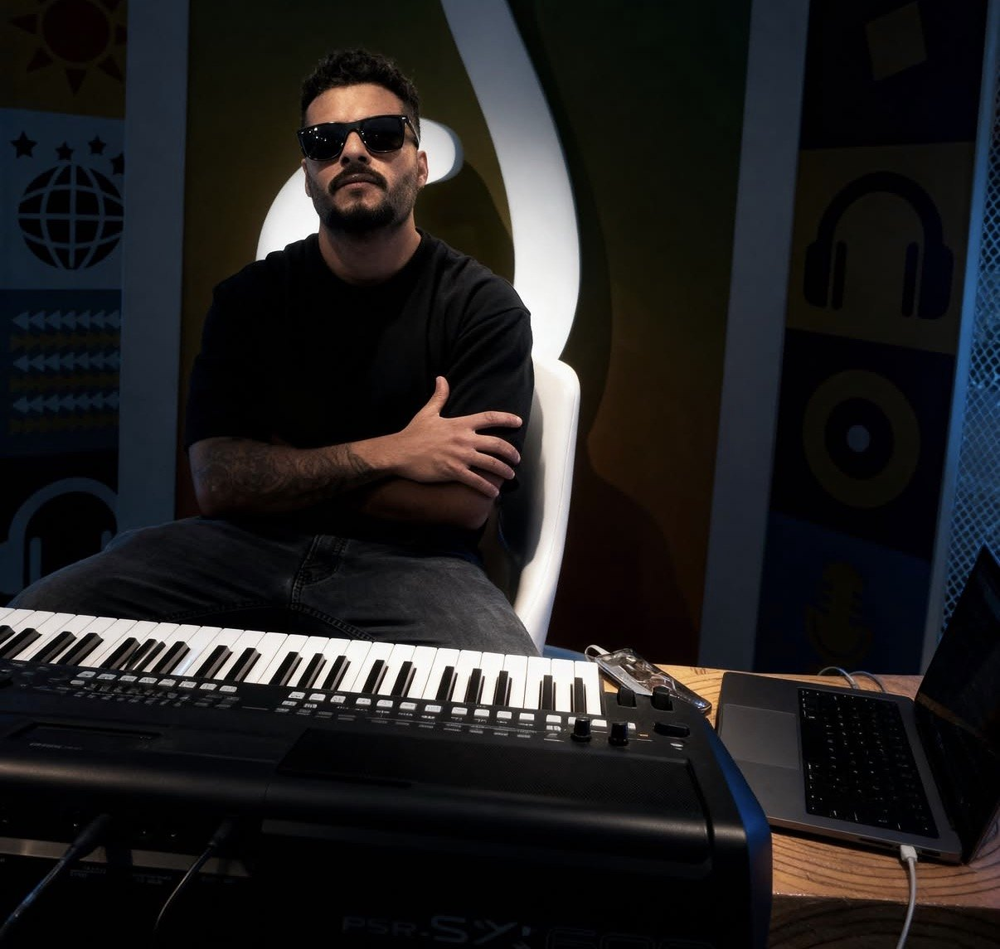
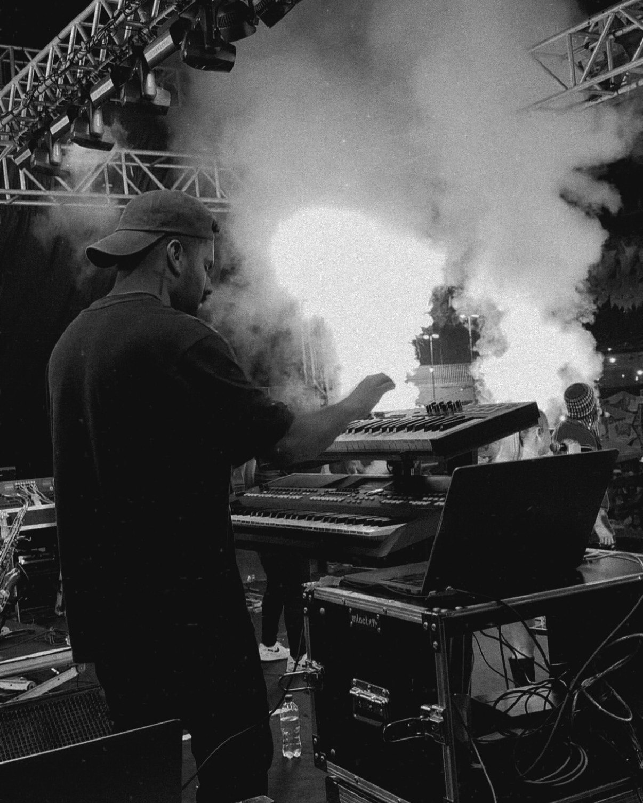

Briefing
Ouço suas referências, entendo o objetivo do lançamento e definimos juntos a sonoridade.

Luca Suque — Chamaa LS. Produtor musical, tecladista e engenheiro de mix & master. Do beat ao master final, do estúdio ao palco.
Sou o cara por trás das teclas e dos faders. Transformo ideias em faixas que soam prontas para tocar em qualquer lugar — do fone ao palco principal. Cada projeto recebe o mesmo cuidado que eu levo para a estrada todo fim de semana.
Produtor musical, tecladista e engenheiro de mix & master, o Luca Suque divide a vida entre o estúdio e a estrada com a @bandaguigghetto. Essa vivência de palco está em cada produção: arranjos que funcionam ao vivo, mixes com peso e clareza, e masters que competem de igual para igual nas plataformas.
Beat, arranjo, timbres e direção artística. Sua ideia vira faixa completa, com identidade e pronta para lançar.
Equilíbrio, profundidade e punch. Cada elemento no lugar certo para a música respirar e bater forte.
Loudness competitivo e consistência em Spotify, YouTube, rádio e paredão — sem perder a dinâmica.
Captação, direção vocal e edição. Takes afinados no feeling, com a melhor versão da sua voz.
Tecladista para shows, turnês e gravações. Programação de timbres, playback e direção musical de palco.
Ouço suas referências, entendo o objetivo do lançamento e definimos juntos a sonoridade.
Estrutura, tom, BPM e arranjo. A base sólida que faz o resto fluir.
Instrumentos, voz e timbres no estúdio. Você acompanha cada etapa.
Ajustes finos, revisões e arquivos prontos para as plataformas digitais.

Fim de semana é palco. A experiência de tocar para multidões é o que dá peso, energia e verdade para cada produção que sai do estúdio.
@bandaguigghettoConte sobre o seu projeto. Ao enviar, sua mensagem é copiada e o Direct do Instagram abre direto na conversa com o Luca — é só colar e mandar.
Direct @luca.suque ↗ Shows @bandaguigghetto ↗